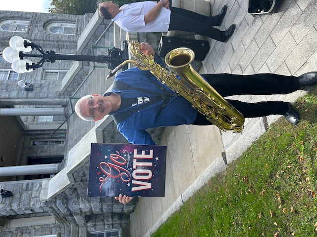

2026 Candidate Forums Announced

The League of Women Voters of Newport County is pleased to announce our 2026 candidate forum series. These nonpartisan events give voters the opportunity to hear directly from candidates running for local and state office.
Forums will be held throughout Newport County in the months leading up to the September primary and November general election. Specific dates and locations will be announced as candidates declare and the election calendar is finalized.
All forums are free and open to the public. They will also be livestreamed for those who cannot attend in person. Questions will be collected in advance and during the events to ensure candidates address the issues most important to our community.
Stay tuned for forum announcements: Follow us on Facebook or check back on this website for updates on forum dates, locations, and participating candidates.